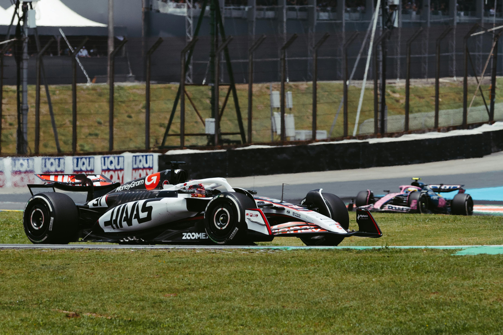

Haas Team
The Haas F1 Team, which debuted in 2016, operates under a unique business model that relies heavily on its technical partnership with Scuderia Ferrari."
The best ferrari F1 car

his own Track
The Monza Grand Prix, officially the Formula One Italian Grand Prix, is one of the most historic and fastest races on the F1 calendar

His best driver
Fernando Alonso drove for the Scuderia Ferrari Formula 1 team for five seasons, from 2010 to 2014. His era with the team was marked by impressive driving in often uncompetitive cars, resulting in three runner-up finishes in the World Drivers' Championship

The tifosis
The term "Tifosi" (singular masculine: tifoso, singular feminine: tifosa) is the Italian word for "fans" or "supporters". In the context of Formula 1, it refers almost exclusively to the passionate and fiercely loyal global fanbase of the Scuderia Ferrari team

The history
The history of Ferrari is an iconic tale of racing passion that evolved into a legendary manufacturer of luxury sports cars. Founded by Enzo Ferrari, the company has become one of the most recognized brands in the world, synonymous with speed, performance, and Italian engineering excellence.

Out of F1
Ferrari is involved in various other branches of motorsport besides Formula 1, including top-tier World Endurance Championship (WEC) racing, GT racing, and its own one-make series